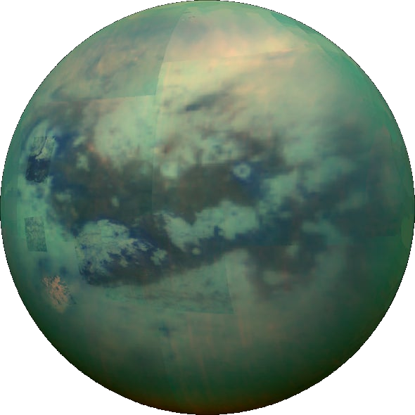

Um pl치netuna
N치nar
Sat칰rnus eins og J칰p칤ter er me칧 m칬rg tungl. �료u eru 62 talsinns og sum �쬰irra mj칬g merkileg. Merkilegasta tungl Sat칰nusar og ef ekki merkilegastai hlutur s칩lkefissins fyrir utan J칬r칧ina er Titan. �룐tta er n칝st st칝rsta tungl s칩lkerfissins(2.574,7 km) og er �쬬칧 l칤ka st칝rra en reikistjarnan Merk칰r칤sus(2.439,7km). �료칧 sem er svo merkilegt vi칧 �쬰tta tungl er a칧 치 yfirbor칧i �쬰ss er flj칩tandi v칬kvi 칤 miklu magni. �룐tta er ekki vatn heldur er �쬰tta Etan og Metan. Vi칧 a칧st칝칧ur eins og 치 Titan ver칧a �쬰ssi efni a칧 v칬kva og eru risa st칩r v칬tn 치 tunginu sem v칝ri merkilegt a칧 sko칧a. S칤칧an er �쬬칧 lofthj칰purinn sem er �쭃kkari en 치 J칬r칧inni og er Titan eina pl치netan me칧 J칬r칧inni og Venus til a칧 hafa �쬬칧 sem telst �쭃kkur lofhj칰pur. �료칧 eru b칰i칧 a칧 plana verkefni til Titans og 치 a칧 leggja af sta칧 치ri칧 2026.
H칠rna er Titan
